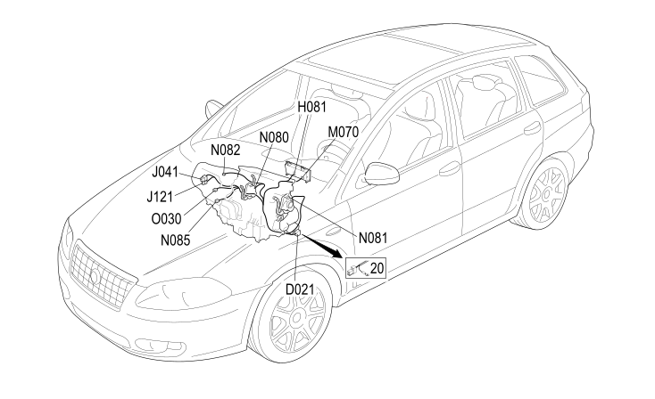

65 AIR CONDITIONING
- Path
- Electrical equipment > 2 WIRING > 65 AIR CONDITIONING
- Kind
- wiring harness
- Applies to
- engines: 1.8, 2.2, 1.9 JTD 8v, 1.9 JTD 16v; all production periods
- Interactive page
- https://sloeber94.github.io/elrnDB-fCrm/en/#/194001846
Applies to: engines: 1.8, 2.2, 1.9 JTD 8v, 1.9 JTD 16v; all production periods

Topics that link to this page (23)
- D021 DASHBOARD/AIR CONDITIONING-HEATER COUPLING (AIR CONDITIONING)
- D021 DASHBOARD/AIR CONDITIONING-HEATER COUPLING (AIR CONDITIONING)
- H081 CLIMATE CONTROL FAN OPERATION (AIR CONDITIONING)
- J041 PASSENGER COMPARTMENT AIR FAN MAXIMUM SPEED RELAY (AIR CONDITIONING)
- J121 PASSENGER COMPARTMENT AIR ADDITIONAL FAN RELAY (AIR CONDITIONING)
- K110 RIGHT UPPER AIR DISTRIBUTION TEMPERATURE SENSOR (AIR CONDITIONING)
- K111 RIGHT LOWER AIR DISTRIBUTION TEMPERATURE SENSOR (AIR CONDITIONING)
- K112 LEFT UPPER AIR DISTRIBUTION TEMPERATURE SENSOR (AIR CONDITIONING)
- K113 LEFT LOWER AIR DISTRIBUTION TEMPERATURE SENSOR (AIR CONDITIONING)
- M070 CLIMATE CONTROL SYSTEM CONTROL UNIT (AIR CONDITIONING)
- M070A CLIMATE CONTROL SYSTEM CONTROL UNIT (AIR CONDITIONING)
- M070B CLIMATE CONTROL SYSTEM CONTROL UNIT (AIR CONDITIONING)
- N078 LEFT MIXED AIR FLAP ACTUATOR (AIR CONDITIONING)
- N079 RIGHT MIXED AIR FLAP ACTUATOR (AIR CONDITIONING)
- N080 AIR DISTRIBUTION FLAP ACTUATOR (AIR CONDITIONING)
- N081 MIXTURE FLAP ACTUATOR (AIR CONDITIONING)
- N082 OUTSIDE AIR/RECIRCULATION INTAKE FLAP ACTUATOR (AIR CONDITIONING)
- N082 OUTSIDE AIR/RECIRCULATION INTAKE FLAP ACTUATOR (AIR CONDITIONING)
- N085 PASSENGER COMPARTMENT AIR FAN (AIR CONDITIONING)
- N085 PASSENGER COMPARTMENT AIR FAN (AIR CONDITIONING)
- N112 RIGHT AIR DISTRIBUTION ACTUATOR (AIR CONDITIONING)
- N113 LEFT AIR DISTRIBUTION ACTUATOR (AIR CONDITIONING)
- O030 PASSENGER COMPARTMENT AIR FAN ADJUSTMENT RESISTANCE (AIR CONDITIONING)